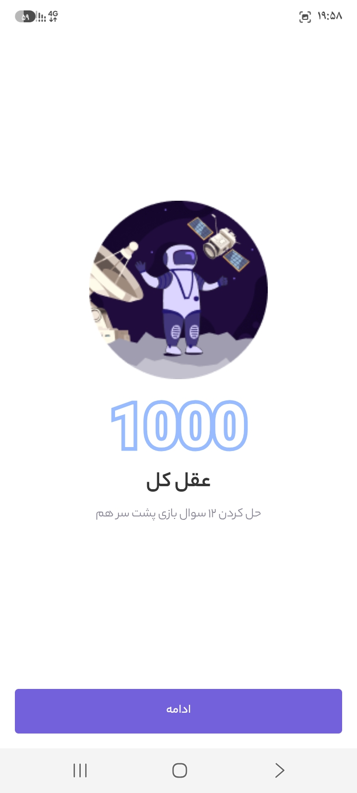
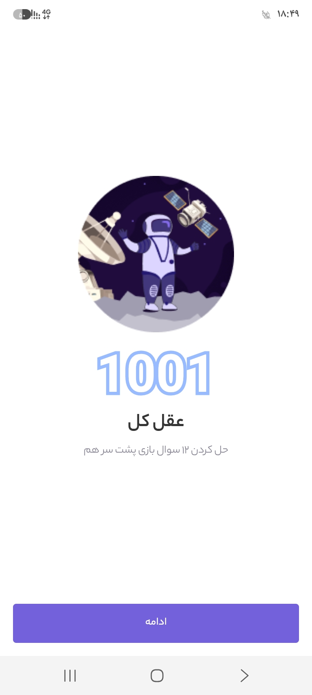
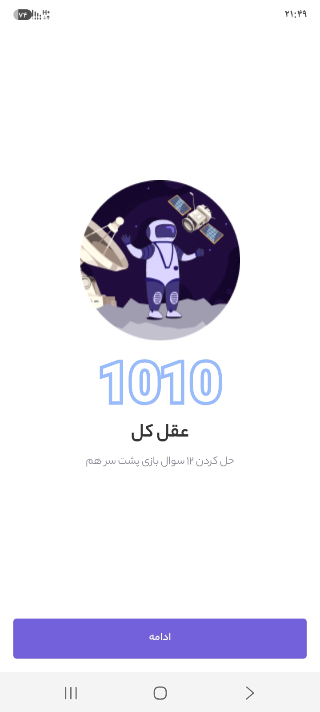
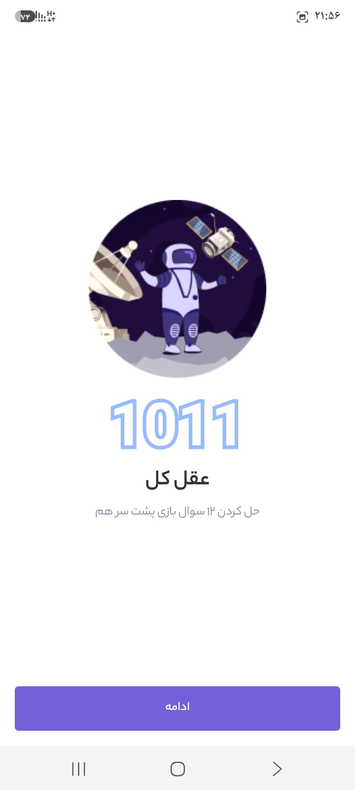
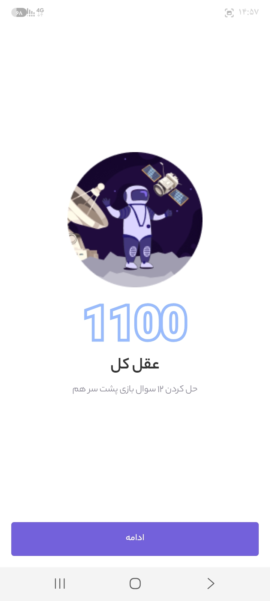
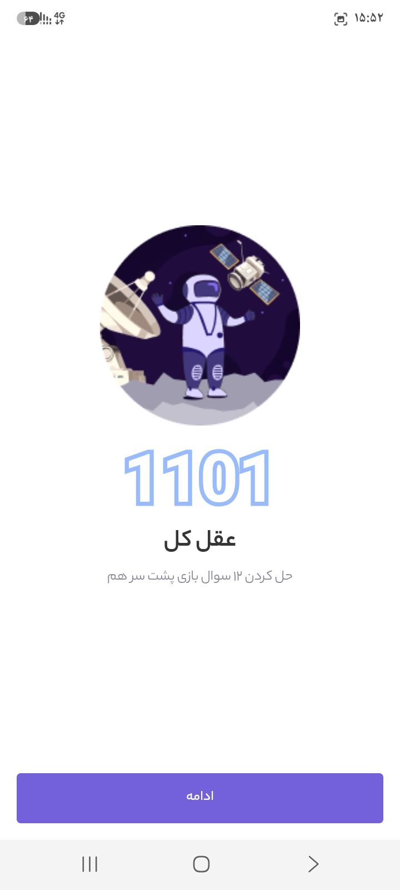
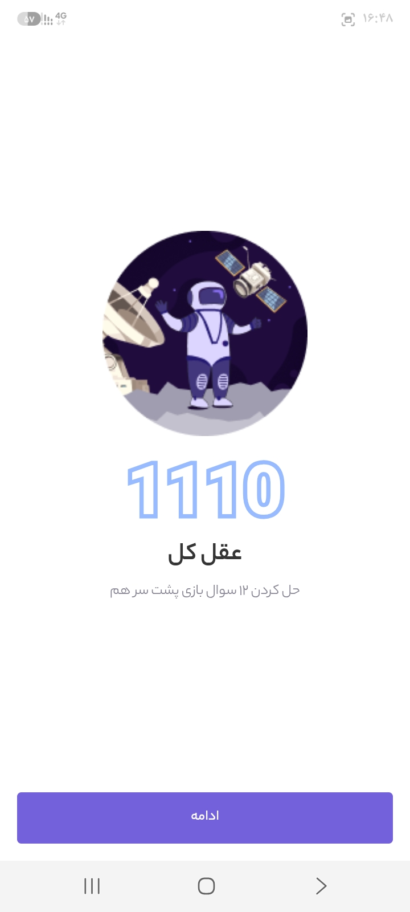

سیستم اعداد دودویی را از پایه یاد بگیرید
با توضیح گامبهگام، مثالهای حلشده و ابزارهای تعاملی، یاد بگیرید کامپیوتر چگونه عددها را با دو رقم 0 و 1 نشان میدهد.
شروع آموزش۱. معرفی سیستم اعداد
سیستم عددی روشی برای نوشتن مقدارهاست. مبنا تعداد رقمهای مجاز و پایهٔ ارزش مکانی را مشخص میکند. در مبنای ۱۰ رقمهای ۰ تا ۹ و در مبنای ۲ فقط ۰ و ۱ داریم.
انسانها احتمالاً بهدلیل شمردن با ده انگشت از مبنای ۱۰ استفاده میکنند. سختافزار دیجیتال دو حالت را بهسادگی و مطمئن تشخیص میدهد (مثلاً ولتاژ پایین و بالا)، پس نمایش دودویی برای آن مناسب است.
بیت (Bit) کوچکترین واحد اطلاعات است و مقدار ۰ یا ۱ دارد. بایت (Byte) معمولاً هشت بیت است و ۲۵۶ مقدار مختلف (۰ تا ۲۵۵) را نشان میدهد.
۲. ارزش مکانی بیتها
ارزش مکانی بیتها از راست به چپ، با توانهای ۲ افزایش مییابد. توان بیت سمت راست صفر است.
| توان | ارزش مکانی |
|---|---|
| ۲ به توان صفر | 1 |
| ۲ به توان یک | 2 |
| ۲ به توان دو | 4 |
| ۲ به توان سه | 8 |
| ۲ به توان چهار | 16 |
| ۲ به توان پنج | 32 |
| ۲ به توان شش | 64 |
| ۲ به توان هفت | 128 |
10112 = 1×8 + 0×4 + 1×2 + 1×1 = 1110
اندیسهای ۲ و ۱۰ فقط مبنا را مشخص میکنند.
۳. تبدیل باینری به دهدهی
ارزش مکانی هر بیت را بنویسید، بیتهای ۱ را انتخاب کنید و ارزشهایشان را جمع کنید.
- 102: 1×2 + 0×1 = 210
- 1012: 1×4 + 0×2 + 1×1 = 510
- 10112: 8 + 0 + 2 + 1 = 1110
- 10002: 1×8 + 0 + 0 + 0 = 810
- 10012: 8 + 0 + 0 + 1 = 910
- 111111112: 128+64+32+16+8+4+2+1 = 25510
۴. تبدیل دهدهی به باینری
عدد را پیاپی بر ۲ تقسیم کنید تا خارجقسمت صفر شود. سپس باقیماندهها را از پایین به بالا بخوانید.
| تقسیم | خارجقسمت | باقیمانده |
|---|---|---|
| 5 ÷ 2 | 2 | 1 |
| 2 ÷ 2 | 1 | 0 |
| 1 ÷ 2 | 0 | 1 |
| تقسیم | خارجقسمت | باقیمانده |
|---|---|---|
| 9 ÷ 2 | 4 | 1 |
| 4 ÷ 2 | 2 | 0 |
| 2 ÷ 2 | 1 | 0 |
| 1 ÷ 2 | 0 | 1 |
نمونههای دیگر: 1010 = 10102، 1310 = 11012، 2510 = 110012.
نمایش گامبهگام
| تقسیم | خارجقسمت | باقیمانده |
|---|
۵. کاربردهای سیستم باینری
پردازندهها و مدارهای دیجیتال، ذخیرهسازی و انتقال داده، نمایش اطلاعات در حافظه، منطق دیجیتال و برنامهنویسی همگی از نمایش دودویی استفاده میکنند.
استفاده از باینری به داشتن دو حالت قابلتشخیص در سختافزار مربوط است. اما کامپیوتر فقط صفر و یک ساده نیست: دنبالهای از بیتها بسته به قرارداد میتواند عدد، متن، رنگ، تصویر یا دستور باشد.
بازی اعداد دودویی
این هشت اسکرینشات از یک بازی فضایی، عددهای دودویی 1000 تا 1111 را نشان میدهند. اینها اعداد باینری ۴ بیتی هستند، نه «هزار» و «هزار و یک».







| مبنای ۲ | محاسبه | مبنای ۱۰ |
|---|---|---|
| 1000 | 8+0+0+0 | 8 |
| 1001 | 8+0+0+1 | 9 |
| 1010 | 8+0+2+0 | 10 |
| 1011 | 8+0+2+1 | 11 |
| 1100 | 8+4+0+0 | 12 |
| 1101 | 8+4+0+1 | 13 |
| 1110 | 8+4+2+0 | 14 |
| 1111 | 8+4+2+1 | 15 |
با تغییر بیت سمت راست از ۰ به ۱، مقدار یک واحد بیشتر میشود: 1000 → 1001 یعنی ۸ به ۹. همین بیت در همهٔ جفتهای بالا (۱۰ به ۱۱، ۱۲ به ۱۳ و ۱۴ به ۱۵) هم یک واحد اضافه میکند.
مبدل آنلاین مبنای ۲ و ۱۰
باینری به دهدهی
| بیت | توان | ارزش | سهم |
|---|
دهدهی به باینری
| تقسیم | خارجقسمت | باقیمانده |
|---|
نمایش ارزش بیتها
عدد دودویی را بنویسید یا روی هر بیت کلیک کنید.
تمرین و آزمون
امتیاز: 0پاسخ درست: 0 از 0
۶. اشتباهات رایج
- خواندن از جهت اشتباه: نادرست: 1011 = 1×1+0×2+1×4+1×8 = 13. درست: بیت راست ارزش ۱ دارد، پس 1011 = 8+2+1 = 11.
- جمع همهٔ بیتها: نادرست: 1011 = 1+0+1+1 = 3. درست: هر بیت ۱ باید در ارزش مکانیاش ضرب شود: ۱۱.
- شروع توان از ۱: نادرست: 101 = 1×23 + 0×22 + 1×21 = 10 (توانها یکی بالاتر گرفته شده). درست: بیت راست 20 = 1 است، پس 101 = 4+0+1 = 5.
- اشتباه گرفتن دو روش: برای باینری به دهدهی جمع ارزشهای مکانی لازم است. برای دهدهی به باینری تقسیم بر ۲ و خواندن باقیماندهها از پایین به بالا. نادرست: 10 ÷ 2 = 5 و نتیجه «۵». درست: باقیماندهها 0,1,0,1 از پایین به بالا: 1010.
- اثر صفرهای سمت چپ: نادرست: 0101 با 101 فرق دارد. درست: هر دو برابر ۵ هستند، چون صفر سمت چپ چیزی اضافه نمیکند.